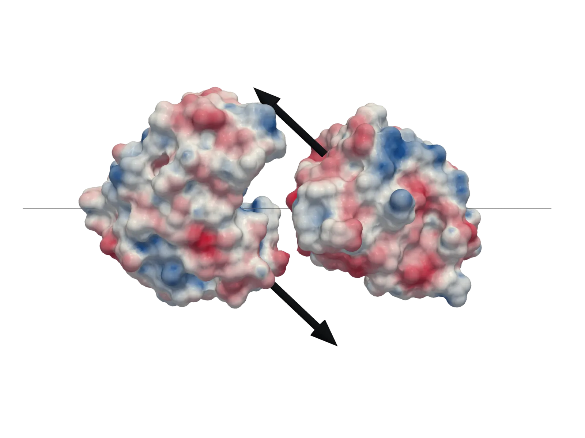

About
I turn the physics of charged molecules into algorithms that work on real, messy problems: finite element solvers, physics-informed networks, and systems far from equilibrium.
Physicist by training. Bachelor in Trieste, master's in Turin, Ph.D. in Pure and Applied Mathematics at Politecnico di Torino and IIT (2021–2025), with Walter Rocchia and Lamberto Rondoni.
Electrostatics of biomolecules. The Poisson–Boltzmann equation describes how charged molecules behave in salt water. I wrote NextGenPB, a finite element solver with analytical super-resolution.
MOX, Politecnico di Milano. Post-doctoral research fellow since 2025 in the Modeling and Scientific Computing lab, working on physics-informed and physics-guided neural networks.
Open to collaborations in computational physics, scientific machine learning and high-performance scientific software. Email is quickest; code is on GitHub.
Research

NextGenPB
A finite element Poisson–Boltzmann solver with analytical super-resolution. The mesh is fine only where the molecular surface is, and coarse everywhere else.
Forces between proteins
Electrostatic forces and binding energies from the same solution, accurate enough to tell how two proteins approach each other.
Physics-informed learning
PINNs and physics-guided networks for electrostatics: the physical law is built into the model, so it needs less data and cannot break it.
Far from equilibrium
Heat conduction in one-dimensional chains, state equations for oscillator chains, and the Boltzmann equation, connecting rigorous results to realistic models.
Solved, not drawn



Publications
2026
- Computing nonequilibrium transport from short-time transients: from Lorentz gas to heat conduction in one-dimensional chainsJ. Chem. Phys.Carbone, Di Florio, Lepri, Rondoni
- Patch-based ray tracing in NanoShaper boosts molecular surface computationJ. Chem. Inf. Model.Mazzeo, Di Florio, Rocchia, Decherchi
2025
- NextGenPB: an analytically-enabled super resolution tool for solving the Poisson–Boltzmann equation featuring local (de)refinementComput. Phys. Commun.Di Florio et al.
2024
- Microscopic state equation for oscillator chainsEur. Phys. J. PlusDi Florio, Giberti, Rondoni, Zhao
- Probability turns material: the Boltzmann equationEntropyRondoni, Di Florio
Contact
- MOX, Politecnico di Milano
- Piazza Leonardo da Vinci 32
- 20133 Milano
- Email me